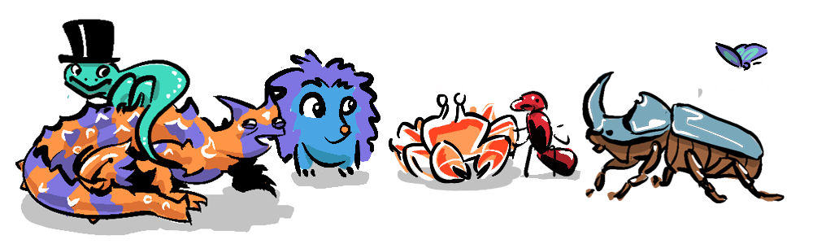

The Stag Hunt showed that different parties can coordinate to achieve the best payoff, and we find that the situation becomes more complex with more players. In the Public Goods Game we are dealing with a large group of players who also have individual interests and the potential for cooperative benefits. Here's how it works:
THE PUBLIC GOODS GAME
- Each player starts with 5 counters.
- Each round, every player secretly decides how many counters to contribute to the public pot.
- The total contributed is then multiplied by a factor (e.g., 2) to represent the "returns" of investing in the public good.
- The pot is then split equally among all players, regardless of how much each contributed.
- Repeat for 5 rounds. The goal is to maximise your total counters.
If you have someone to play with, give it a go.
The Public Goods Game gives us the opportunity to build large collective profits, but it also allows for players to reap rewards without contributing. These players are known as...

Dealing with the dynamics of a system where free-riding is possible, is reflective of the real world. My dad, for instance was a member of the teachers' union who would pay a membership fee, go to meetings, and organise collective action for better pay and conditions, and when the union was successful, all teachers would benefit—even non-union members (free-riders). In game theory these Public Goods Games are called...
This is a category of games similar to coordination problems, but with different incentives. In a coordination problem, every player must be aligned for the best payoff to be reached, like pins in a lock...

... but the real world is messier than this—often not everyone needs to cooperate for a payoff to be reached. Take herd-immunity for instance—if 90% of a population are vaccinated (with a vaccination that protects against transmission), a disease cannot take root in a population, keeping the unvaccinated 10% safe.
These examples of free-riding can actually be seen as a positive-sum game—everyone benefitting from the actions of a few might be more cost-effective than everyone having to take part, and it's much less fragile than a coordination problem that requires everyone's involvement. The trouble emerges when too many people free ride—famously understood as The Tragedy of the Commons where it is proposed that areas of land that are open to be used by the public will end up being exploited.
It's important to note though that Elinor Ostrom's Nobel Prize-winning research famously showed that communities can coordinate effectively to manage shared resources, highlighting that local norms and mutual monitoring can encourage better cooperation.
While small commons benefit from visibility, making it difficult to free-ride to the point of exploitation, the environment is a public good that is on an entirely different scale. Think about carbon emissions—it's much more difficult to allocate responsibility for an invisible gas, dispersed throughout the span of earth's atmosphere.

I've explored this scenario with variation on the Public Goods Game, which enables players to take more from the pot than they contributed, to the point of decimating the commons, as we will see.
THE OPEN ACCESS PROBLEM
- Start with 20 counters representing the environment ("e").
- Each player contributes 2 counters to the pool.
- The total number of counters in the pool multiplied by e/10
- Roll dice to line up and take up to 10 counters each (even from the environment)
- Continue for 5 rounds or until the environment is depleted.
While this game represents a social dilemma, it is distinct from a Public Goods Game because, rather than hidden contributions, in this game players get privileged access to winnings, it's at this point in the game where free-riders can exploit the environment, ultimately at the expense of the group (including their own long-term payoff).
I actually had the opportunity to test this game as part of a workshop I ran at my daughter's school last year. Students played two games, each with 10 players. With the first group, students scrambled to grab as many counters as they could. Those who moved early got rich for a moment, but exhausted the environment and the game ended abruptly with nothing left to multiply in the following rounds.
The second group learned from that fiasco and tried to protect the environment by reinvesting more counters, despite the persistence of some players free-riding (or exploiting: taking more than their share). This shift in mindset led to multiple rounds of increasing payouts. It was striking how quickly kids grasped the core lesson: cooperation can yield tremendous collective benefit, but short-term greed can devastate the common good.
Let's hope we adults can collectively do the same.

If the Stag Hunt taught us the power of coordination in pairs and small groups, the Public Goods Game and other Social Dilemmas show how those lessons scale up to many players. The classroom experiment showed we can learn, adapt, and evolve new principles to protect and grow the commons we share. While the dynamics of Social Dilemmas are more complex than other game theory scenarios, they have the benefit of being social, so they're actually fun to play with friends, which makes them a good entry point to game theory.